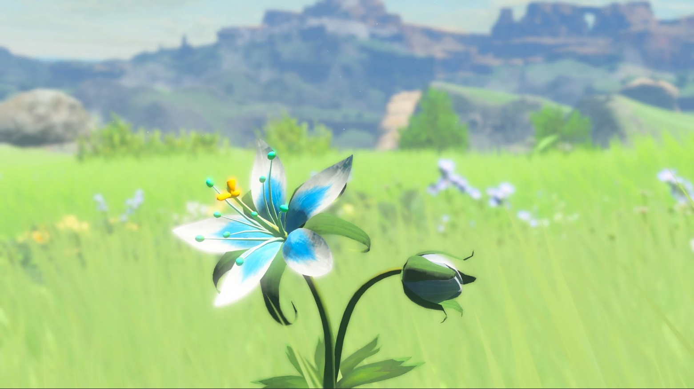
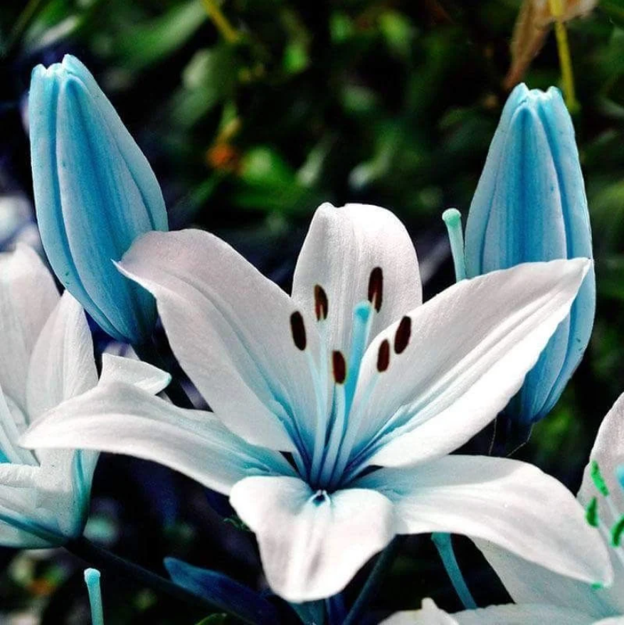
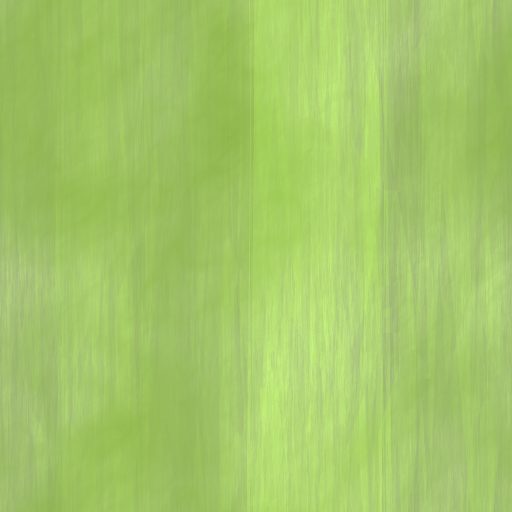
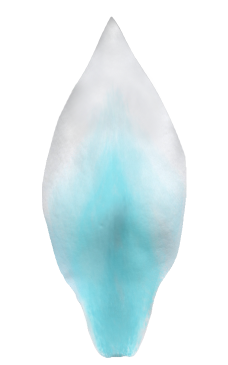
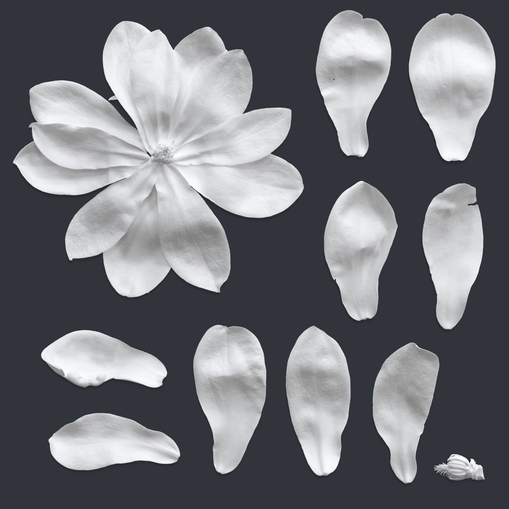
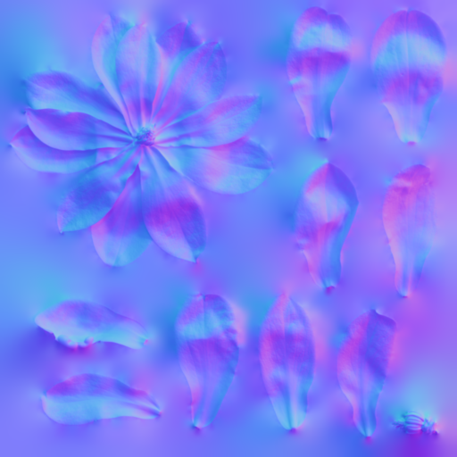
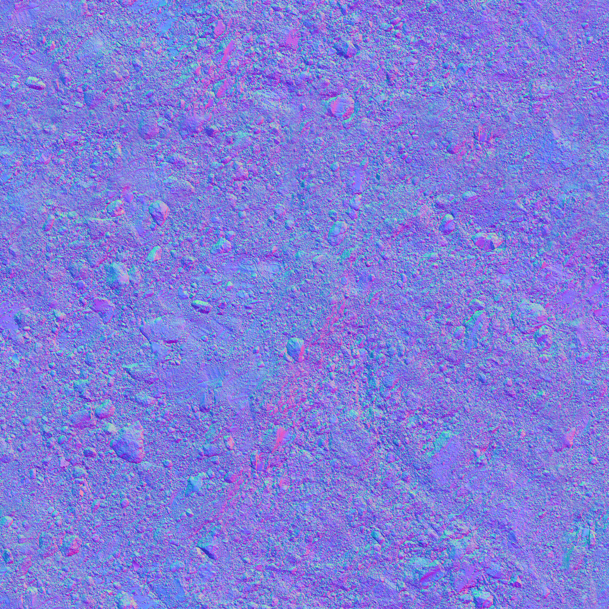
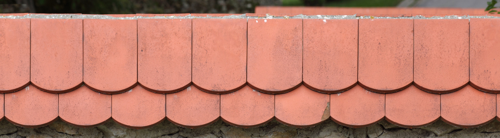
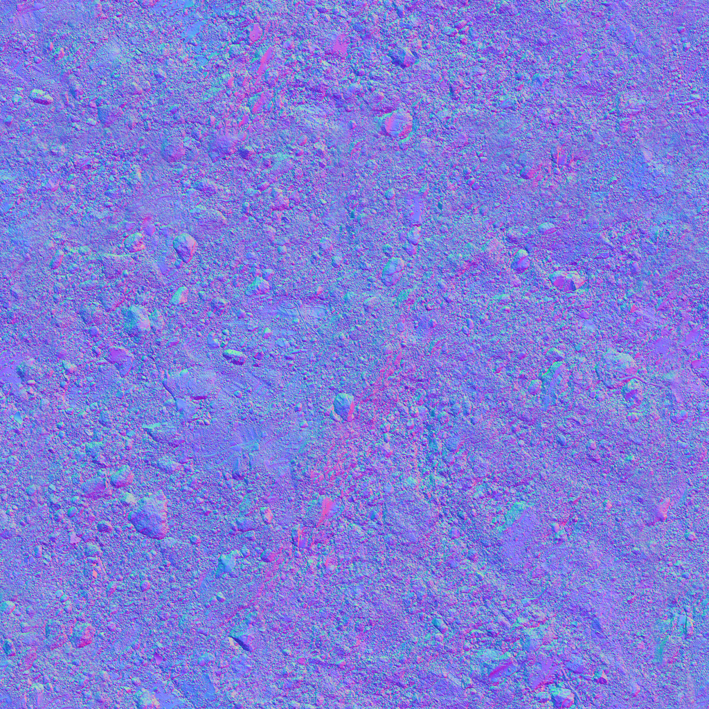
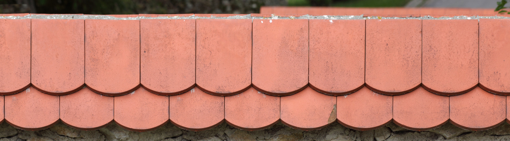

Week 9
For this assignment, I created the Silent Princess flower from The Legend of Zelda: Breath of the Wild. I created the main flower petal using a texture of a Magnolia flower petal from textures.com. I then edited this texture (the top right one), using GIMP to elongate and point the petal and add a blue shading.
    
 


